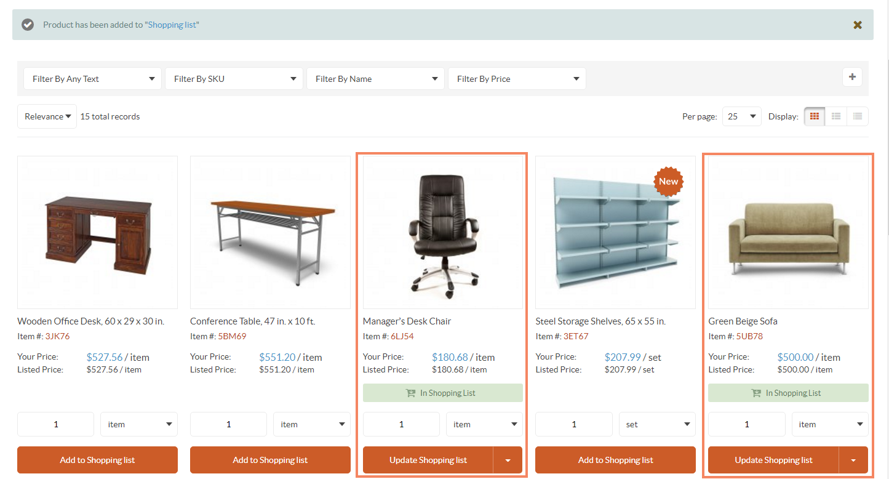
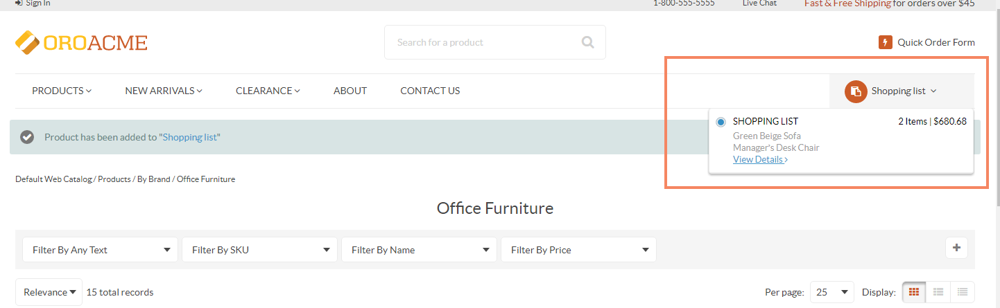

Sample Guest Checkout¶
As an illustration, let us follow the steps of the checkout as an unauthenticated user. The following example has registration options available at the checkout. However, please keep in mind, that your website configuration may be different and registration options may be unavailable.
Add selected items to the shopping list.
Navigate to Shopping List on the top right of the page, and click View Details.
Click Create Order at the bottom of the shopping list page.

The following options are available on the page that opens:
Sign in

Create and Account

Forgot Your Password

Continue as a Guest

Click Continue as a Guest.
Note
You will have another chance to register during order review.
Fill in the billing and shipping information, as well as select the shipping method and provide payment details.

At the Order Review step, the following options are enabled by default:
- Delete this shopping list after submitting the order.
- Save my data and create and account.
As Save my data and create an account is enabled, you can provide your credentials for a quick registration:
- Enter your email address.
- Enter password.
- Reenter password for confirmation.

Click Submit Order.
To complete registration, open your mailbox and check for the registration confirmation email.